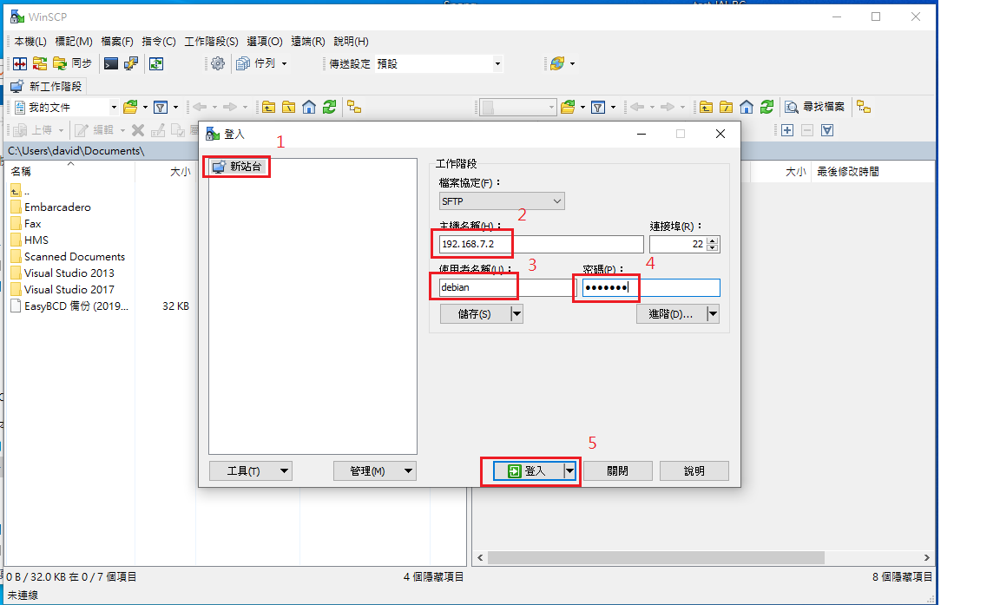
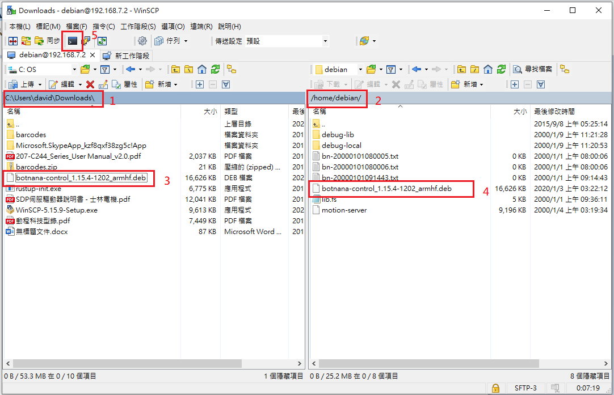
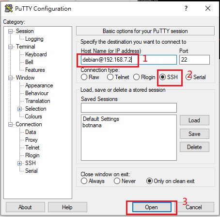

手動安裝 Botnana Control 更新檔(.deb)
一般來說建議使用 Botnana Web Utils 進行更新檔安裝，說明可參考軟體更新。
若是安裝過程發生意外錯誤，導致無法再使用 Botnana Web Utils 進行安裝，則可以手動執行安裝進行修復，步驟如下。
1. 傳送安裝檔至 Botnana
在 Windows 上操作
請至這裡下載並安裝 winscp 。

- 開啟 winscp 後建立新站台
- 輸入 Botnana 的 ip 位址，預設為 192.168.7.2
- 輸入 Botnana 上預設的使用者名稱 debian
- 輸入密碼 temppwd
- 登入

登入後視窗左邊為 PC 本機的磁碟目錄，右邊為 Botnana 上的磁碟目錄。
- 本機索引至 Botnana Control 更新檔存放的位置
- Botnana 索引至 /home/debian
- 將安裝檔拖曳至 Botnana 中
在 Linux 上操作
索引至安裝檔所的位置，例如在家目錄 Downloads 中
$ cd ~/Downloads/
使用 scp 指令將安裝檔複製到 Botnana 上，例如安裝檔名稱為 botnana-control_1.15.4-1202_armhf.deb
$ scp botnana-control_1.15.4-1202_armhf.deb debian@192.168.7.2:~
依照提示輸入密碼 temppwd，顯示下列訊息表示成功
botnana-control_1.15.4-1202_armhf.deb 100% 16MB 3.2MB/s 00:05
2. ssh 連線登入 Botnana
在 Windows 上操作
請至這裡下載並安裝 putty 。

按照上圖輸入使用者名稱與 ip 位址後開啟連線，並依據提示輸入密碼 temppwd
在 Linux 上操作
在終端機中輸入
$ ssh debian@192.168.7.2
並依據提示輸入密碼 temppwd
3. 手動安裝更新檔
輸入 dpkg -l botnana-control 可以查看目前安裝的 botnana-control 版本，例如
debian@arm:~$ dpkg -l botnana-control
Desired=Unknown/Install/Remove/Purge/Hold
| Status=Not/Inst/Conf-files/Unpacked/halF-conf/Half-inst/trig-aWait/Trig-pend
|/ Err?=(none)/Reinst-required (Status,Err: uppercase=bad)
||/ Name Version Architecture Description
+++-=================-==========-===============-==============================
ii botnana-control 1.13.25 armhf Botnana Control IIOT Platform
輸入 sudo dpkg -r botnana-control 可以移除目前安裝的 botnana-control，例如
debian@arm:~$ sudo dpkg -r botnana-control
[sudo] password for debian:
(Reading database ... 50512 files and directories currently installed.)
Removing botnana-control (1.13.25) ...
Processing triggers for systemd (215-17+deb8u2) ...
將 botnana-control 更新檔移至更新目錄，例如
debian@arm:~$ sudo mv botnana-control_1.15.4-1202_armhf.deb /opt/mapacode/botnana-control/update/
debian@arm:~$ cd /opt/mapacode/botnana-control/update/
debian@arm:/opt/mapacode/botnana-control/update$ ls
botnana-control_1.15.4-1202_armhf.deb dpkg.log
若發現 update 目錄裡有殘留舊的安裝檔可以將其移除，例如有一個舊的安裝檔名稱為botnana-control_1.13.0-0101_armhf.deb
sudo rm botnana-control_1.13.0-0101_armhf.deb
安裝 botnana-control 更新檔，例如
debian@arm:/opt/mapacode/botnana-control/update$ sudo dpkg -i botnana-control_1.15.4-1202_armhf.deb
Selecting previously unselected package botnana-control.
(Reading database ... 28587 files and directories currently installed.)
Preparing to unpack botnana-control_1.15.4-1202_armhf.deb ...
Unpacking botnana-control (1.15.4) ...
Setting up botnana-control (1.15.4) ...
Processing triggers for systemd (215-17+deb8u2) ...
查看安裝結果
debian@arm:/opt/mapacode/botnana-control/update$ sudo dpkg -l botnana-control
Desired=Unknown/Install/Remove/Purge/Hold
| Status=Not/Inst/Conf-files/Unpacked/halF-conf/Half-inst/trig-aWait/Trig-pend
|/ Err?=(none)/Reinst-required (Status,Err: uppercase=bad)
||/ Name Version Architecture Description
+++-=================-=========-==============-=============================
ii botnana-control 1.15.4 armhf Botnana Control IIOT Platform
botnana-control 名稱前面顯示 ii 表示正確安裝
如安裝檔的位置是在 /opt/mapacode/botnana-control/update，安裝完畢後，建議刪除安裝檔，避免重開機時再安裝一次。
debian@arm:/opt/mapacode/botnana-control/update$ sudo rm botnana-control_1.15.4-1202_armhf.deb
重新啟動 Botnana
$ sudo reboot